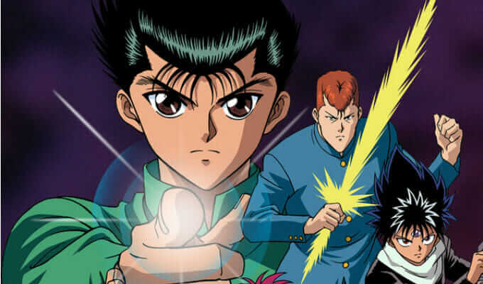

Shonen
Ação e Aventura
Conheça as obras mais aclamadas cheias de batalhas épicas, superação e amizade verdadeira.
Saiba maisDescubra os lançamentos mais populares, resenhas detalhadas e as melhores recomendações da cultura pop japonesa.
Ver Catálogo
Conheça as obras mais aclamadas cheias de batalhas épicas, superação e amizade verdadeira.
Saiba mais
Uma seleção especial das artes em preto e branco que revolucionaram o quadrinho mundial.
Saiba mais
Histórias envolventes sobre futuro, tecnologia e mistérios psicológicos instigantes.
Saiba mais